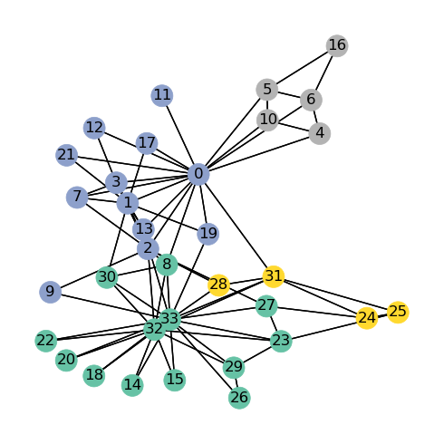
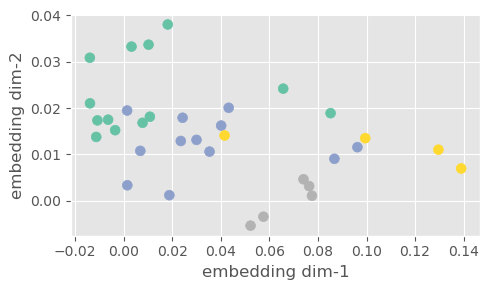
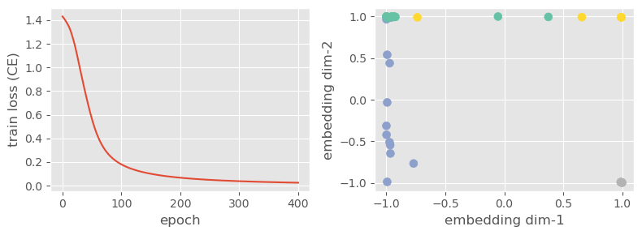

In this tutorial, I will cover some basic Graph Neural Networks algorithms on benchmark datasets. You can either read and review the code snippets here or directly go to the entire notebooks in Github project.
1. Graph Neural Networks Background
Convolutional neural networks (or, more broadly, deep learning) work well on various data domains including image classification, speech recognition, and natural language processing. Most of these data domains have structured grids where we can assume local connectivity between data points. However, many data modalities lie in non-Euclidean spaces, from social graphs to gene expression or neuroscience.
Semi-Supervised Classification with Graph Convolutional Networks
The problem considered in the main paper is the classification of nodes in a graph. It differs from the usual classification problems we had in the image or video domain. Instead of having small instances, we have a huge graph with nodes (i.e., documents) and edges between them (citation), and the task is to classify each node. For instance, classifying each paper’s topic can be an example of node classification.
We can think of the problem as having a big citation graph, but only a part of the papers in the graph are labeled; for instance, their topics are known. The task is to learn to predict unlabeled nodes’ topics. \mathcal{L}_0 is a supervised loss learned w.r.t. the labeled part of the graph. f(.) can be a differentiable function, \lambda is weighting factor, and X is a matrix of node feature vectors, X_i.
\Delta=D-A denotes the unnormalized graph Laplacian of an undirected graph \mathcal{G}=(\mathcal{V},\mathcal{E}) with nodes v_i \in \mathcal{V}, edges (v_i,v_j) \in \mathcal{E}.
Degree matrix, D where D_{ii}=\sum_{j} A_{ij} (If there is a self-loop, it contributes 2 to the vertex’s degree.)
Adjacency matrix, A, a binary or weighted square matrix containing the information of whether the pairs of indices are adjacent or not.
This paper proposes the following propagation rule of spectral graph convolutions:
H^{l+1} = \sigma \Big( \widetilde{D}^{\frac{1}{2}} \widetilde{A} \widetilde{D}^{\frac{1}{2}} H^{(l)} W^{(l)} \Big)
\tag{2}
\widetilde{A}=A+I_N: adjaceny matrix of undirected graph \mathcal{G} with added self-connections.
I_N: the identity matrix
\widetilde{D}_{ii}=\sum_j{\widetilde{A}_{ij}}, layer specific trainable weight matrix
\sigma, activation function such as ReLU(.)=max(0,.)
H^{(l)} \in \mathbb{R}^{N \times D} is the matrix activations in the l^{th} layer; H^{(l)}=X
2. Toy Example: KarateClub
Zachary’s karate club network [4]: this graph contains 34 nodes, connected by 154 (undirected and unweighted) edges. Every node is labeled by one of four classes, obtained via modularity-based clustering [5].
Karate Club is already included in PyG’s standard datasets. We first load it and check the the number of features and classes:
Code
import numpy as npimport torchimport torch_geometricfrom torch_geometric.data import Datafrom torch_geometric.utils import to_networkximport networkx as nximport matplotlib.pyplot as pltplt.style.use('ggplot')dataset = torch_geometric.datasets.KarateClub()print('Dataset: KarateClub')print(' - the number of graphs =', len(dataset))print(' - the number of features =', dataset.num_features)print(' - the number of classes =', dataset.num_classes)
Dataset: KarateClub
- the number of graphs = 1
- the number of features = 34
- the number of classes = 4
Now, using NetworkX library, we visualize the entire graph by coloring the nodes of each label seperately:
Code
G = to_networkx(dataset[0])plt.figure(figsize=(5,5))nx.draw_networkx(G, pos=nx.spring_layout(G, seed=42), arrows=False, node_color=dataset[0].y, cmap="Set2")plt.tight_layout()plt.axis("off")plt.show()

Implementing Graph Neural Networks
class GCN(torch.nn.Module):def__init__(self):super().__init__() torch.manual_seed(1234)self.conv1 = torch_geometric.nn.GCNConv(dataset.num_features, 4)self.conv2 = torch_geometric.nn.GCNConv(4, 4)self.conv3 = torch_geometric.nn.GCNConv(4, 2)self.classifier = torch.nn.Linear(2, dataset.num_classes)def forward(self, x, edge_index): h =self.conv1(x, edge_index) h = h.tanh() h =self.conv2(h, edge_index) h = h.tanh() h =self.conv3(h, edge_index) h = h.tanh() # Final GNN embedding space.# Apply a final (linear) classifier. out =self.classifier(h)return out, h
Now we apply only a forward pass and get the embeddings in the output of 3th GCN layer in size of 2 and see scatter plot:
Code
model = GCN()data = dataset[0] # get the first graph object._, h = model(data.x, data.edge_index)h = h.cpu().detach().numpy()plt.figure(figsize=(5,3))plt.scatter(h[:, 0], h[:, 1], s=50, c=data.y, cmap="Set2")plt.xlabel('embedding dim-1')plt.ylabel('embedding dim-2')plt.tight_layout()plt.show()

Training of the Karate Club Network
Code
model = GCN()criterion = torch.nn.CrossEntropyLoss() # Define loss criterion.optimizer = torch.optim.Adam(model.parameters(), lr=0.01) # Define optimizer.def train(data): optimizer.zero_grad() # Clear gradients. out, h = model(data.x, data.edge_index) # Perform a single forward pass. loss = criterion(out[data.train_mask], data.y[data.train_mask]) # Compute the loss solely based on the training nodes. loss.backward() # Derive gradients. optimizer.step() # Update parameters based on gradients.return loss, htrain_epoch, train_loss = [], []for epoch inrange(401): loss, h = train(data) train_epoch.append(epoch) train_loss.append(loss.item())fig, ax = plt.subplots(1, 2, figsize=(8,3))ax[0].plot(train_epoch, train_loss)ax[0].set_xlabel('epoch')ax[0].set_ylabel('train loss (CE)')h = h.cpu().detach().numpy()ax[1].scatter(h[:, 0], h[:, 1], s=50, c=data.y, cmap="Set2")ax[1].set_xlabel('embedding dim-1')ax[1].set_ylabel('embedding dim-2')plt.tight_layout()plt.show()

3. Reproducing Experiments in the Paper
Now let’s try to reproduce the experiments in the paper
Code
from torch_geometric.datasets import Planetoidfrom torch_geometric.transforms import NormalizeFeaturesdataset = Planetoid(root='./datasets', name='Cora', transform=NormalizeFeatures())print()print(f'Dataset: {dataset}:')print('======================')print(f'Number of graphs: {len(dataset)}')print(f'Number of features: {dataset.num_features}')print(f'Number of classes: {dataset.num_classes}')data = dataset[0] # Get the first graph object.print()print(data)print('======================')# Gather some statistics about the graph.print(f'Number of nodes: {data.num_nodes}')print(f'Number of edges: {data.num_edges}')print(f'Average node degree: {data.num_edges / data.num_nodes:.2f}')print(f'Number of training nodes: {data.train_mask.sum()}')print(f'Training node label rate: {int(data.train_mask.sum()) / data.num_nodes:.2f}')print(f'Has isolated nodes: {data.has_isolated_nodes()}')print(f'Has self-loops: {data.has_self_loops()}')print(f'Is undirected: {data.is_undirected()}')
Dataset: Cora():
======================
Number of graphs: 1
Number of features: 1433
Number of classes: 7
Data(x=[2708, 1433], edge_index=[2, 10556], y=[2708], train_mask=[2708], val_mask=[2708], test_mask=[2708])
======================
Number of nodes: 2708
Number of edges: 10556
Average node degree: 3.90
Number of training nodes: 140
Training node label rate: 0.05
Has isolated nodes: False
Has self-loops: False
Is undirected: True
Code
import torchfrom torch.nn import Linearimport torch.nn.functional as Fclass MLP(torch.nn.Module):def__init__(self, hidden_channels):super().__init__() torch.manual_seed(12345)self.lin1 = Linear(dataset.num_features, hidden_channels)self.lin2 = Linear(hidden_channels, dataset.num_classes)def forward(self, x): x =self.lin1(x) x = x.relu() x = F.dropout(x, p=0.5, training=self.training) x =self.lin2(x)return xmodel = MLP(hidden_channels=16)print(model)
M. M. Bronstein, J. Bruna, Y. LeCun, A. Szlam, and P. Vandergheynst, “Geometric deep learning: Going beyond euclidean data,”IEEE Signal Processing Magazine, vol. 34, no. 4, pp. 18–42, 2017, doi: 10.1109/MSP.2017.2693418.
[2]
Z. Wu, S. Pan, F. Chen, G. Long, C. Zhang, and P. S. Yu, “A comprehensive survey on graph neural networks,”IEEE Transactions on Neural Networks and Learning Systems, vol. 32, no. 1, pp. 4–24, 2021, doi: 10.1109/TNNLS.2020.2978386.
[3]
T. N. Kipf and M. Welling, “Semi-supervised classification with graph convolutional networks,” in International conference on learning representations, 2017.
[4]
W. W. Zachary, “An information flow model for conflict and fission in small groups,”Journal of anthropological research, vol. 33, no. 4, pp. 452–473, 1977.
[5]
U. Brandes et al., “On modularity clustering,”IEEE transactions on knowledge and data engineering, vol. 20, no. 2, pp. 172–188, 2007.